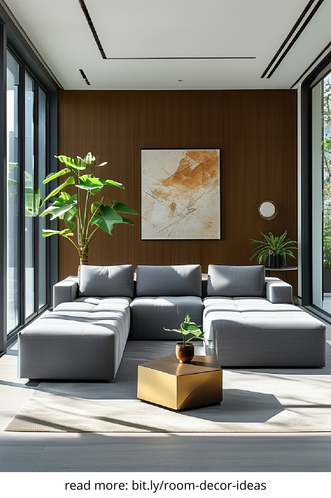
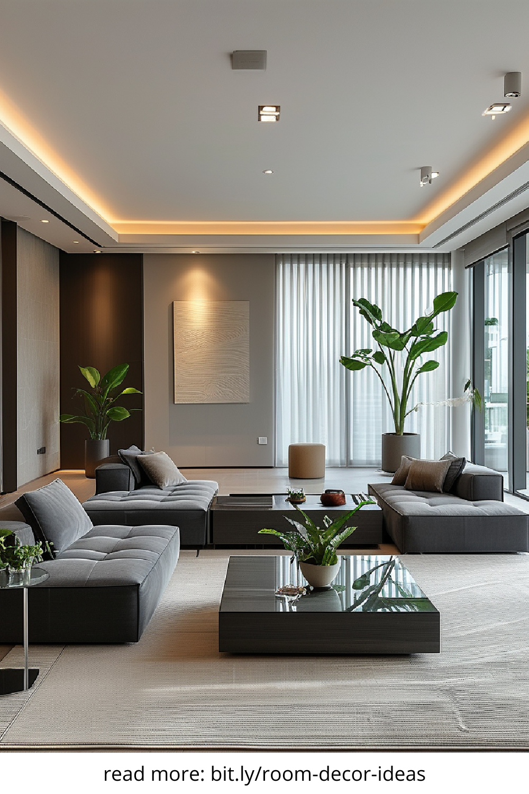
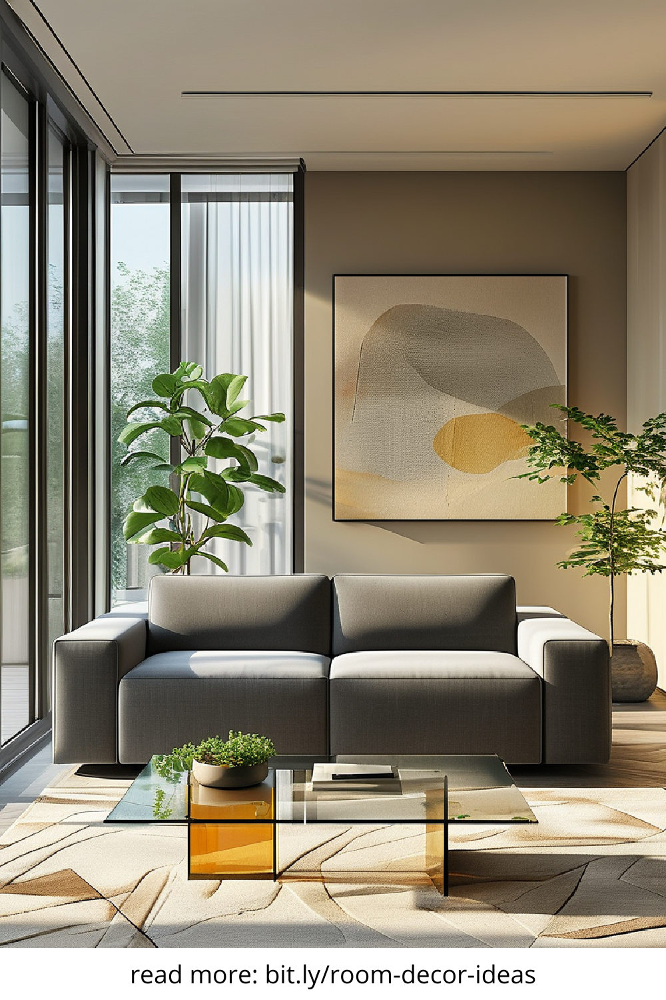
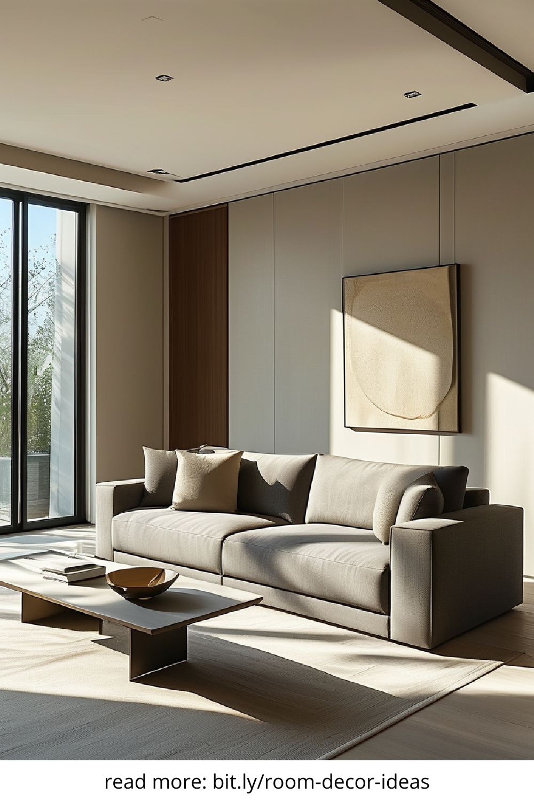

The modern living room is more than just a place to relax — it’s a reflection of contemporary lifestyles, design sensibilities, and functional innovation. This space sets the tone for your home, influencing how guests perceive your style and how you experience comfort every day. Whether you're updating your current setup or planning a complete overhaul, understanding what defines a modern living room can help you create a space that's both stylish and practical.
Modern living rooms are characterized by their simplicity, clean lines, and functional design. One of the primary features is minimalism — this doesn’t mean bare, but intentional. Every piece of furniture or decor serves a purpose. Neutral tones such as white, grey, beige, and black are commonly used as the foundation, with accent colors brought in through decor or artwork. Open floor plans and the use of natural light are also typical, helping to create a sense of space and airiness.
Technology plays a significant role in modern interiors. Smart lighting, hidden speakers, and integrated charging stations are all common additions. At the same time, sustainable and eco-conscious choices — such as recycled materials or energy-efficient appliances — are becoming increasingly popular.
Furniture in a modern living room should offer both aesthetic appeal and practical comfort. Think low-profile couches with streamlined shapes, multi-functional coffee tables, and modular shelving units that can adapt to your needs. Materials such as leather, polished metal, and tempered glass are commonly found in modern living spaces, providing a sleek and contemporary feel.
To avoid a cold or sterile look, balance these materials with textiles such as wool throws, velvet cushions, or a cozy area rug. A good rule of thumb is to limit large furniture pieces to two or three colors to maintain a cohesive look and feel.
Whether your living room is compact or spacious, layout is key. Start by identifying the focal point — it could be a statement wall, fireplace, or a large window. Arrange your seating to complement that feature, allowing for natural conversation flow. For small living rooms, floating furniture (pieces not placed directly against the wall) can make the space feel larger.
Incorporate open shelving or wall-mounted storage to reduce floor clutter. Modular furniture also works well here, especially items that can serve multiple functions — like an ottoman with built-in storage or a convertible sofa.
To soften the clean lines of modern design, incorporate natural textures like wood, stone, linen, or jute. Indoor plants are a fantastic way to bring life and color into the space while improving air quality. Consider mixing matte and glossy finishes to add visual interest without overwhelming the room. The goal is to create a balanced environment that feels lived-in yet curated.
Accent walls made of reclaimed wood or natural brick can serve as standout features in a modern living room, offering a rustic touch to contrast the contemporary elements.
Lighting is both functional and decorative in a modern living room. Start with layered lighting: a combination of ambient (overhead), task (reading lamps), and accent (wall sconces or LED strips) sources. Avoid overly ornate fixtures in favor of clean, geometric designs made from metal, glass, or acrylic.
Dimmer switches and smart bulbs can help control the mood, adjusting brightness based on time of day or activity. Highlight artwork, shelves, or architectural features with focused lighting to add depth and dimension to the room.
The beauty of the modern living room lies in its versatility. It can be bold or subtle, monochrome or colorful, minimalist or eclectic — as long as it reflects your lifestyle and values. By focusing on clean design, functionality, and comfort, you can create a space that feels both timeless and on-trend. Invest in quality materials, stay true to your personal style, and don't be afraid to experiment with new ideas to bring your perfect modern living room to life.
   